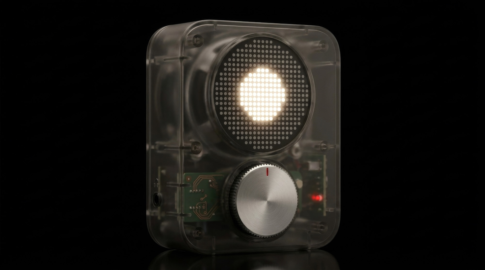

A palm-sized instrument that generates endless ambient music, tuned to your room and the time of day. One dial. No screen.

The shell is clear on purpose. Every rib, copper trace and screw stays visible — engineering as the finish, not something to cover up.